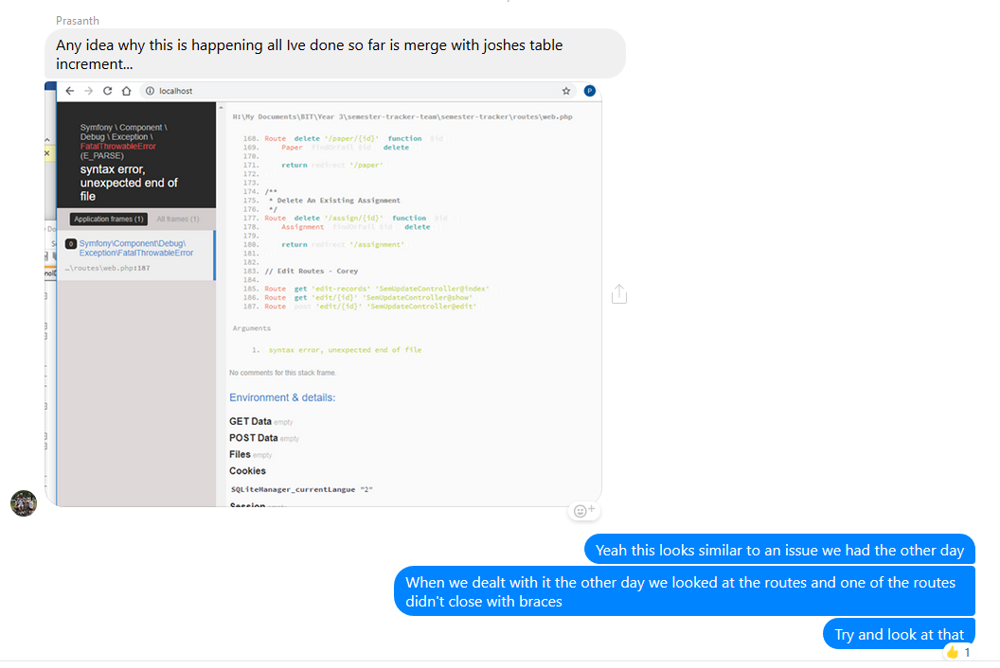
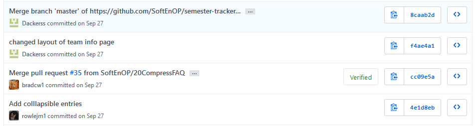
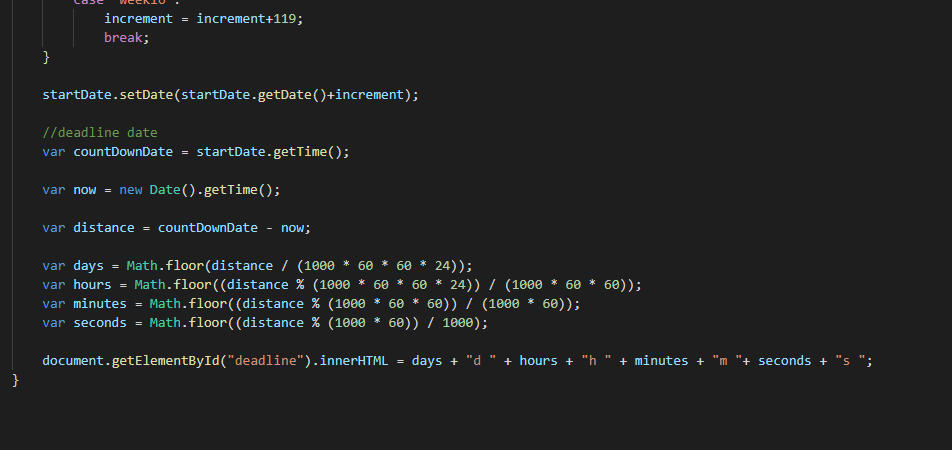

Professional Proficiency
Our groups communication was decent, and we were in contact nearly every day about where we were at with our currently assigned task. We used a Facebook group chat to organise meetings, scrums, and to find time when we were all available to do some work together.

Organising scrum times
Due to each person having quite different schedules and commitments we were only able to scrum with the full group approximately three times a week, but would often scrum with whoever was on campus on the days where the full group couldn’t be in. The times where we could have a full scrum were the times where we had the best picture of where each team member was at with their progress on the current sprint. Being able to scrum every single day would have greatly helped as we would have known if someone was struggling more than the others and could offer some in person help rather than help over a messaging app. The Agile principles say that face to face communication is better than the alternatives and our group certainly found this to hold true, especially as the project got bigger and more complex.
Using a Facebook messenger group chat was perfect for making up for lost scrums due to our group’s day to day schedules. We all had Facebook messenger already installed on our phones and our we had our phones on us nearly 24/7. Any time of the day if somebody was stuck on a piece of code or didn’t know how to do something in Laravel they could message the group and they were guaranteed to receive a reply promptly.
Helping team mates over chat
One of the few times of the week where everyone was free was Thursday up until class at three. We made up for lost scrum time by sitting down together at this time and getting everyone’s assigned tasks up to date, helping those that needed help, and pushing any complete features out to the live branch. Because of this I felt that Thursdays were a valuable day for us and it was the best alternative we had to a lack of consistent scrums.
Early in the semester it became clear that a couple of the group members needed to take a leadership role as two to of the others weren’t focused and didn’t seem to have as clear of a picture about what needed to be done. For the most part Corey took the lead in terms of setting up each sprint, and if Corey was busy Josh or I would step in and set it up. Delegation of sprint tasks wasn’t decided by any one person; everybody had a say but final confirmation of who was doing what mostly came down to Corey and myself. A vast majority of this was organised in class on Corey’s account as he’d take the initiative to do most of the driving.
The times where I took on a leadership role was on our Thursday group work sessions. Most Thursdays I would talk Callam and Prasanth through the logic of whatever task they were working on as I felt the most proficient with programming logic. I would often have my task finished in one sitting which would free me up to help or guide my team mates.
Our group worked well as a team well. Two members didn’t contribute as much to the work as the others due to not being as proficient technically but those that were technically proficient worked well together to overcome some of the surprise challenges we faced.
When Laravel was introduced it really through the entire team off because it was unlike anything any of us had dealt with before. Corey, Josh and I were all working on the adding to the database the semesters, courses, and assignments respectively. We really struggled with how it all worked in Laravel regarding how views and databases were handled. Eventually I figured it out and pushed my code, at which point I was able to work through it with Corey and Josh as they were coming up against all the same errors I had just worked through.
Thursdays were where most of our core team work was happening. We got a lot of work completed, especially if we could help finish up the tasks of the less competent members. One Thursday in particular we had two members not show up or let us know what was going on with their tasks, so Josh and I split up their work and with Corey’s help worked through the tasks to get them finished and push to the live branch before the sprint deadline.
Work completed before deadline
Certain members of the group managed their time very well. I personally don’t feel like I managed my time very well. This has been an issue I’ve always had and need to work on. Early on in the semester my time management was a lot better than towards the end. During the final sprint I had a lot going on in my personal life and didn’t contribute to the group very much. I feel like I let my team down right at the end.
One of the ways I was able to maximise my time was finding bits of code people would commonly use and adjusting it for my purposes. This saved me from figuring out how to code something that was readily available online. This was particularly helpful with JavaScript and CSS.
JavaScript Solution
At times it didn’t feel like some members of the group were particularly motivated, especially when we were having to deal with tasks that we were really struggling with. The biggest motivating factor was that there were four other people relying on you. The days when I really didn’t want to have to deal with the project, I thought about how that would affect my group mates, and that gave me the push to get on with it.
It was easy to motivate some of the group members more than others. Two of the group members were very work focused and the other two weren’t. I attempted to speak with the less motivated team members about how we were relying on them to get their tasks done and when this didn’t seem to work, I let them know I was disappointed and that they were letting the rest of us down.
Throughout the course of this project we aimed to adhere to the Agile Principles as much as we could. Some of the principles we consistently met, and others fell a little short. Each sprint beyond the first aimed to have a new feature integrated and deployed into the software. If the client had new ideas that they wanted added to the software our team would create a new ticket and start work on that issue in a sprint in the near future.
Once we had a working foundation our team was able to make changes to the software easily while still maintaining a usable and working tool. When speaking with the client we would take note of what they wanted added or changed and distilled this down into several user stories. This broke larger tasks down into manageable sizes for each team member to work on.
An example of this within our project was the need to add a Laravel framework. Once the framework was up and running, we were able to take what we had already worked on and integrated it into the framework. There have been several user stories where the implementation wasn’t quite how the client had envisioned the feature working and there was a need to revise that feature in a future sprint.
Agile workflow is a constant process of working on a feature, implementing the feature into useable software, reflecting on the sprint, and beginning the next sprint. In the big picture I feel like we were successful at achieving this, although every team member, myself included, did fall short of implementing a complete feature by the end of a sprint at least once.